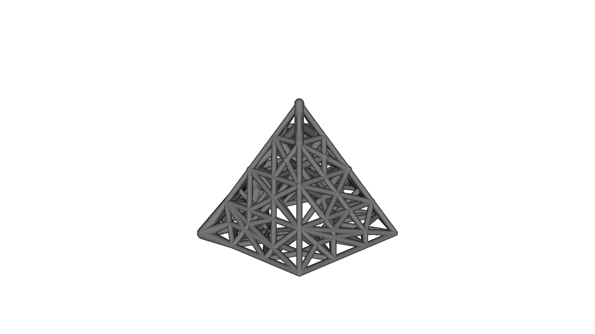
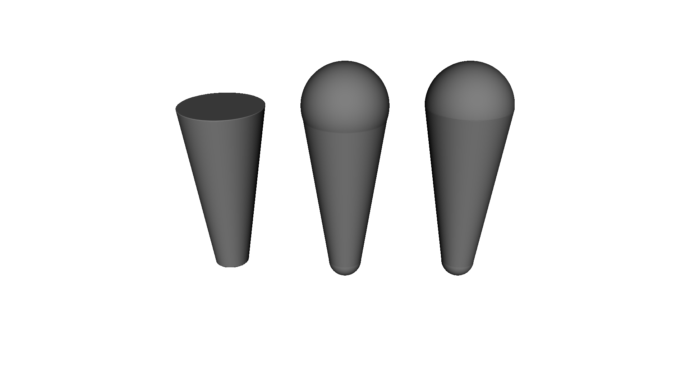
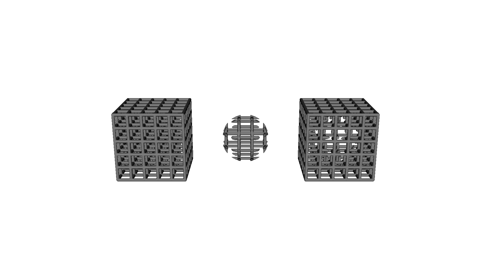
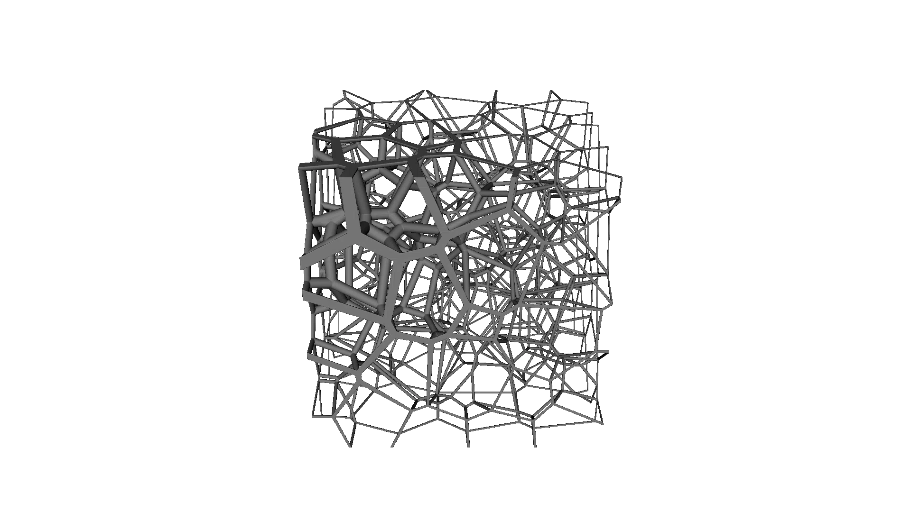
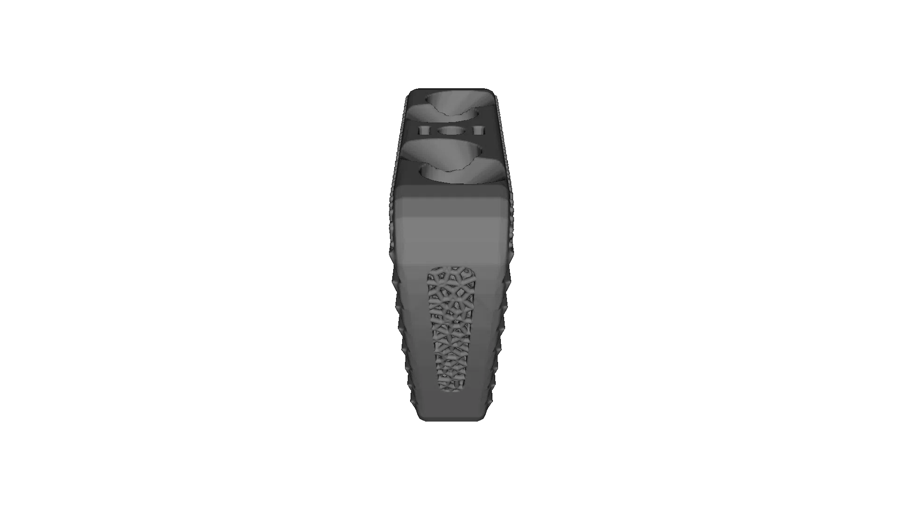

Importing 3MF beam lattices#
OpenVCAD imports lattice geometry written in the
3MF Beam Lattice Extension.
ThreeMFBeamLattice reads such a file and rebuilds it as an implicit tree, so the
result is an ordinary OpenVCAD node: transform it, combine it with other geometry,
hang attributes on it, and compile it like anything else.
Note
OpenVCAD currently imports beam lattice files. Writing them is not supported yet, so this is a one-way path into OpenVCAD rather than a round trip.
This guide assumes you have worked through Getting Started. It covers geometry import only — see Scope and limitations at the end.
Why the extension exists#
Additive manufacturing can build lattices that no subtractive process could, and they are now routine in medical implants, lightweighting, energy absorption, and heat exchange. The bottleneck was never the printer — it was the file.
A triangle mesh describes only a surface, so a lattice has to be tessellated strut by strut. Every beam becomes a tube of triangles, every joint becomes a patch where tubes intersect, and the triangle count scales with the number of struts rather than with the complexity of the design. A lattice fine enough to matter mechanically produces a mesh too large to open, let alone edit. nTop cites a variable-thickness diamond lattice that exports as a 3.4 MB 3MF and would be over 3 GB as an STL.
The insight behind the extension is that a beam lattice is not really a surface — it is a graph. The design intent is a set of nodes, the beams connecting them, and a radius at each beam end. That is a few numbers per strut, and the surface can be regenerated from it whenever it is actually needed. So the extension stores exactly that: beams indexed into the mesh’s own vertex list, with optional per-end radii and cap modes, alongside whatever solid triangle geometry the object also carries. The spinal implant sample used later in this guide holds an 11,821-beam lattice and a solid cage body in 262 KB.
Because it rides on the 3MF core format, a beam lattice travels with units, build transforms, materials, and component structure intact — the things STL throws away.
Where these files come from#
nTop is the tool most likely to have produced a beam lattice 3MF you are handed; it has exported them since Platform 2.14, writing the solid mesh and the lattice into one file. Materialise Magics, Netfabb, and other AM preparation tools read them. Note that the extension describes beams and balls only: face lattices and TPMS surfaces such as gyroids cannot travel through it, from nTop or from anywhere else. OpenVCAD models those natively — see Metamaterials — they just have no representation in this file format.
Bringing such a file into OpenVCAD converts that graph into signed-distance geometry, which is where it becomes editable again: intersect it with a body, grade a material through it, or feed it to any OpenVCAD compiler.
Import a file#
import pyvcad as pv
import pyvcad_rendering as viz
root = pv.ThreeMFBeamLattice("examples/data/beam_lattice/pyramid.3mf")
viz.Render(root)
That is the whole import. Every build item in the file is resolved through its component graph, transforms are baked in, coordinates are converted to millimetres, and each object becomes part of one tree.
The pyramid sample: a lattice-only object of 391 beams, 156 of them tapered

The three official 3MF Consortium samples ship with OpenVCAD under
examples/data/beam_lattice/, and between them they exercise most of the
extension:
File |
Beams |
What it exercises |
|---|---|---|
|
391 |
A lattice-only object with no triangles, and beams that taper from one radius to another |
|
1291 |
Clipping against a separate cube object, and beams that inherit the lattice radius |
|
11821 |
A solid mesh object and a lattice object built together as one part |
Inspect what the file declared#
Import does not hide the source data. Every object carries the settings it was read with, which is the quickest way to understand an unfamiliar file:
lattice = pv.ThreeMFBeamLattice("examples/data/beam_lattice/variable_voronoi.3mf")
imported = lattice.imported_objects[0]
print(imported.name) # Thick_lattice
print(len(imported.beams)) # 1291
print(imported.radius) # 0.5
print(imported.min_length) # 0.005
print(imported.cap) # CapMode.Sphere
print(imported.clip_mode) # ClipMode.Inside
Use pv.read_3mf_beam_lattice(path) when you only want to look at a file
without building geometry for it. It returns the same object records, and skips
the cost of constructing the tree:
scene = pv.read_3mf_beam_lattice("examples/data/beam_lattice/spinal_implant.3mf")
for obj in scene.objects:
kind = f"{len(obj.beams)} beams" if obj.has_lattice else f"{len(obj.triangles)} triangles"
print(obj.object_id, obj.name, kind)
1 ALIF 5672 triangles
2 Thick_lattice 11821 beams
What a beam actually is#
A beam is the conical frustum between two vertices, with an independent radius
at each end, closed off by a cap mode. Strut is that shape:
beam = pv.Strut(
pv.Vec3(0.0, 0.0, 0.0), # start
pv.Vec3(0.0, 0.0, 20.0), # end
2.0, # radius at the start
5.0, # radius at the end
pv.CapMode.HemiSphere, # cap at the start
pv.CapMode.HemiSphere, # cap at the end
)
The single-radius constructor you already know, pv.Strut(start, end, radius),
is the same shape with matching radii and sphere caps — an ordinary capsule.
Nothing about existing lattice code changes.
Cap modes#
The three cap modes decide what closes each end:
Mode |
Geometry |
|---|---|
|
Flat, leaving a bare cone or cylinder |
|
A full sphere of the end radius, which can bulge past a narrowing lateral surface |
|
Only the outward half of that sphere, flush with the end |
{kind=link}

Butt, Sphere, HemiSphere. Note the neck where the sphere cap bulges past the cone rimOn a cylinder, where both radii match, sphere and hemisphere describe the same solid — the specification says so, and OpenVCAD collapses the two so the distance field stays exact. The difference only appears at the wider end of a cone. A beam may combine two different modes, one per end.
Runnable version: examples/lattices/beam_lattice/1_beam_cap_modes.py.
Clipping#
A lattice may declare a clipping mode and a separate mesh object to clip
against. OpenVCAD realises those modes as ordinary implicit CSG — the clipping
mesh is loaded as a Mesh node and intersected with, or subtracted from, the
lattice:
Mode |
OpenVCAD equivalent |
|---|---|
|
The lattice, untouched |
|
|
|
|
{kind=link}

None_, Inside, and Outside, all against the same sphereBecause the clip is CSG rather than a pre-trimmed mesh, the result stays editable: swap the clipping volume for any other OpenVCAD node, or animate it.
The importer applies whatever clip the file declares. The variable voronoi
sample clips to the inside of its 100 mm cube. Beams that terminate on a cube
face would otherwise bulge a full radius past it, and the clip trims that away.
Pass apply_clipping=False to import the raw beams instead, which makes the
difference easy to measure:
point = (-50.2, -34.50148, 56.55310) # 0.2 mm outside the cube's -X face
clipped = pv.ThreeMFBeamLattice("examples/data/beam_lattice/variable_voronoi.3mf",
mesh_voxel_size=0.25)
raw = pv.ThreeMFBeamLattice("examples/data/beam_lattice/variable_voronoi.3mf",
apply_clipping=False, mesh_voxel_size=0.25)
clipped.prepare(pv.Vec3(0.25, 0.25, 0.25), 1.0)
raw.prepare(pv.Vec3(0.25, 0.25, 0.25), 1.0)
print(raw.evaluate(*point)) # -0.3: inside a beam's overhanging cap
print(clipped.evaluate(*point)) # 0.2: the clip removed it
mesh_voxel_size sets how finely the clipping mesh is voxelized into a signed
distance field. Match it to the smallest feature the clip has to resolve;
leaving it unset uses OpenVCAD’s usual heuristic for the mesh’s size.
The variable voronoi sample, clipped to its cube on import

Runnable versions: examples/lattices/beam_lattice/4_import_3mf_clipped_voronoi.py
and examples/lattices/beam_lattice/6_clipping_modes.py.
Builds that mix solids and lattices#
The extension unifies a lattice with the triangle mesh of the same object, and a build may contain several objects. The spinal implant sample does both: object 1 is the solid ALIF cage body, object 2 is an 11,821-beam lattice filling its windows. Importing the file brings in the whole build:
part = pv.ThreeMFBeamLattice("examples/data/beam_lattice/spinal_implant.3mf",
mesh_voxel_size=0.2)
The spinal implant sample: a solid cage body unioned with an 11,821-beam lattice

Pass object_id to bring in one object on its own. That is how you give the
lattice and the solid body different materials:
cage = pv.ThreeMFBeamLattice(path, object_id=1, mesh_voxel_size=0.2)
infill = pv.ThreeMFBeamLattice(path, object_id=2)
cage.set_attribute(pv.DefaultAttributes.COLOR_RGBA,
pv.Vec4Attribute("0.75", "0.75", "0.78", "1.0"))
infill.set_attribute(pv.DefaultAttributes.COLOR_RGBA,
pv.Vec4Attribute("0.20", "0.55", "0.85", "1.0"))
root = pv.Union(cage, infill)
Set include_triangle_mesh=False to import a lattice object without the
triangle shell of the same object. Applying it to an object that is only a
triangle mesh leaves nothing to build, and the import says so.
Runnable version: examples/lattices/beam_lattice/5_import_3mf_spinal_implant.py.
Python API#
Name |
Purpose |
|---|---|
|
A capsule, unchanged from earlier releases |
|
A conical frustum with per-end radii and cap modes |
|
|
|
One beam of a |
|
One ball of a |
|
|
|
A beam-and-ball lattice over a shared vertex list |
|
|
|
Reads a file’s contents without building geometry |
|
Imports a beam lattice 3MF as an implicit tree |
ThreeMFBeamLattice takes object_id, include_triangle_mesh,
apply_clipping, use_representation_mesh, and mesh_voxel_size. Its bounding
box is valid before prepare(), because it is derived from the imported data
rather than from its child meshes.
Scope and limitations#
Geometry only. Per-beam and per-ball property references (
pid,p1,p2) are not read, so imported lattices carry no material or colour from the file. Assign OpenVCAD attributes to the imported node instead.Beam sets are not imported.
<beamset>elements group beams for an editing application’s own purposes and do not affect geometry, which the specification lets a consumer ignore.Representation meshes are not used by default. A representation mesh is a display stand-in that the specification forbids using to manufacture a part.
use_representation_mesh=Truesubstitutes it for the lattice when you want a cheap preview of a very large file; do not compile that result.Export is not supported. OpenVCAD reads beam lattice files but does not yet write them.
Non-uniform build transforms scale radii approximately. A beam radius is a single number, so a transform that scales the axes differently is applied to radii as the equivalent uniform scale. Rigid and uniformly scaled transforms, which is what real files use, are exact.
Both the current clippingmode attribute and the older clipping spelling used
by the published samples are read.